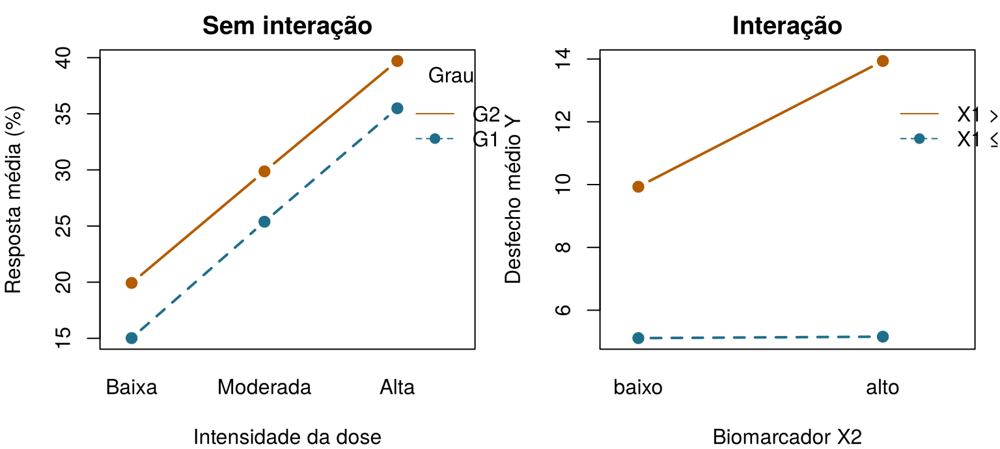
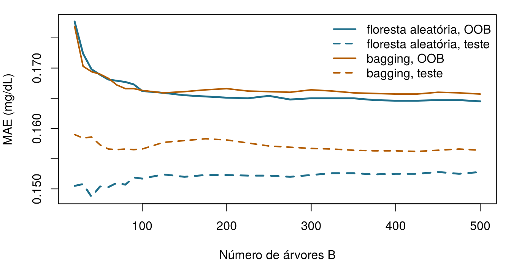
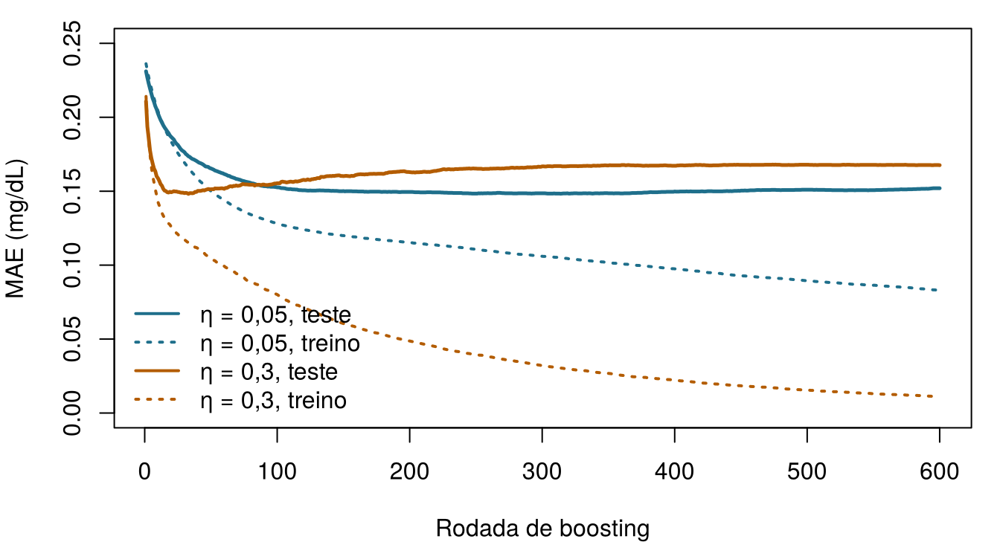

São 7h na UTI Ala 7. Seán, o farmacêutico da unidade, passou a noite revisando as doses dos medicamentos dos pacientes em risco de lesão renal aguda (LRA: um aumento da creatinina de pelo menos 0,3 mg/dL em 48 horas (Kidney Disease: Improving Global Outcomes (KDIGO) Acute Kidney Injury Work Group 2012)). “Os escores de risco são ótimos”, diz ele à Dra. Emma Walsh, a intensivista, “mas às 3 da manhã eu preciso de algo que consiga seguir sem computador: algumas perguntas, em ordem, que terminem em um risco.” Emma sorri: é exatamente isso que uma árvore de decisão é.
A poucos corredores dali, a equipe do ONCO-1 — o ensaio randomizado de quimioterapia versus nenhuma quimioterapia do Capítulo 1 — acaba de receber o relatório de um consultor: um modelo de árvores com boosting que prevê quais pacientes respondem à quimioterapia com uma área sob a curva ROC de 0,998. Quase perfeito. Eles devem acreditar? Este capítulo constrói as ferramentas por trás das duas histórias e termina com uma lista de verificação para a segunda.
Esta é uma pequena árvore aprendida a partir dos 1.000 pacientes de treino da UTI Ala 7. Comece pelo topo, responda a cada pergunta para o paciente e siga o ramo até chegar a uma caixa com um risco. Que risco de LRA a árvore atribui a cada um dos três pacientes desta noite? Arrisque seu melhor palpite — o capítulo explica de onde vem a árvore.
Paciente
SOFA
Creatinina basal (mg/dL)
Risco de LRA segundo a árvore
Aoife Byrne, 71 anos, sepse
6
1,0
Tomás Ruiz, 54 anos
3
0,9
Priya Nair, 38 anos
12
1,5
Como usar este capítulo
Começando por aqui?
Este capítulo toma emprestadas algumas ideias de capítulos anteriores. Em uma linha cada:
Conjuntos de treino e de teste. Um modelo é ajustado com dados de treino e avaliado em um conjunto de teste que nunca viu (Seção 1.8). Este capítulo usa as divisões compartilhadas do livro, do Capítulo 3, guardadas em data/splits/: 1.000 pacientes de treino e 250 de teste na UTI Ala 7, 800 e 200 no ONCO-1, com os pacientes de treino distribuídos em cinco partições fixas de validação cruzada. Todos os modelos da Parte II são avaliados nos mesmos pacientes.
Sobreajuste e validação cruzada. Um modelo flexível pode memorizar ruído; a validação cruzada com \(V\) partições estima o desempenho em dados novos enquanto as escolhas estão sendo feitas (Definição 1.8, Definição 1.9). Um hiperparâmetro é uma configuração que controla como um modelo é aprendido, em vez de ser ele próprio aprendido (Capítulo 3).
Métricas de erro. O erro absoluto médio (MAE) e a raiz do erro quadrático médio (RMSE) medem o quanto as predições numéricas se afastam da verdade (Capítulo 3).
A regressão linear e a logística fazem predições com uma soma ponderada dos atributos (Capítulo 4, Capítulo 5); a área sob a curva ROC (AUC) é a probabilidade de que um paciente escolhido ao acaso com o evento receba um escore mais alto do que um sem o evento (Capítulo 5).
Vazamento (leakage) é a presença, nos atributos, de informação que não estaria disponível, honestamente, no momento da predição (Capítulo 3). A entropia mede a surpresa (Capítulo 2).
Exemplo
Quem ou o quê
Desfecho
Rostos que você vai conhecer
1UTI Ala 7
1.250 pacientes de UTI em 4 hospitais
variação da creatinina em 48 h (lesão renal aguda se ≥ 0,3 mg/dL)
Aoife (71 anos, sepse, risco limítrofe), Tomás (54 anos, risco baixo), Priya (38 anos, risco alto); a Dra. Emma Walsh; Seán, o farmacêutico
2Ensaio ONCO-1
1.000 pacientes randomizados para quimioterapia ou não
redução do tumor (%)
pacientes #0042 e #0917
3HomeBeat
500 pessoas que usam um relógio inteligente em casa
escore de estresse, evento de deterioração
Lena
4CellWorks
420 lotes de produção de uma terapia celular
escore de potência
lote CW-118
Os quatro conjuntos de dados são simulados e podem ser baixados no apêndice de dados. A apresentação completa está na Seção 1.1.
Este capítulo trata de modelos feitos de perguntas. Ele tem catorze seções e um Lab, sete verificações rápidas, três widgets “Experimente” (cultivar uma árvore, sortear amostras bootstrap, avançar passo a passo no boosting), um desafio e três missões de programação em R e Python. Reserve cerca de duas horas. As florestas com centenas de árvores e os modelos XGBoost são treinados uma única vez, fora do navegador, e seus resultados são carregados aqui; todo o resto roda ao vivo.
Notação em resumo (apenas para consulta)
Símbolo
Significado
Seção
\(R_1, \dots, R_{\lvert T\rvert}\)
as regiões (folhas) de uma árvore \(T\); \(\lvert T\rvert\) é o número de folhas
Antes de soltar uma árvore em dados clínicos, ajuda vê-la recuperar regras que já conhecemos. Simulamos 200 instâncias com dois atributos, \(X_1\) (pense em algo como a idade, entre 0 e 10) e \(X_2\) (pense em um biomarcador, centrado em zero), e um desfecho \(Y\) produzido por regras do tipo se–então mais um pouco de ruído:
Leia a saída de cima para baixo. O nó 1 é a raiz: todas as 200 instâncias, com média 8,89. A primeira pergunta é “\(X_1 < 4{,}04\)?”. Quem responde sim (92 instâncias) termina em uma caixa final, uma folha, que prevê 5,13. Os demais recebem uma segunda pergunta, “\(X_2 < 0{,}01\)?”, que os envia a folhas que preveem 9,93 ou 13,94. A árvore redescobriu quase exatamente as três regras da Equação 6.1, com limiares de cerca de 4 e 0, a partir de nada além dos dados. Cada caminho da raiz até uma folha é uma regra (Breiman et al. 1984; Hastie, Tibshirani, e Friedman 2009, cap. 9):
Figura 6.1: A árvore de brinquedo vista de cima. Cada ponto é uma instância, sombreada de acordo com o seu desfecho; a árvore corta o plano em três retângulos e prevê uma constante (impressa) em cada um.
É isso que uma árvore de regressão faz com qualquer conjunto de dados: ela recorta o espaço dos atributos em retângulos e prevê uma constante em cada um. O restante do capítulo explica como ela escolhe onde cortar, até que profundidade ir e por que, na prática, raramente confiamos em uma única árvore.
6.2 A anatomia de uma árvore
O vocabulário vem da botânica, de cabeça para baixo: a raiz fica no topo e as folhas embaixo. A Figura 6.2 mostra o mesmo exemplo de brinquedo anotado à mão.
Figura 6.2: A anatomia de uma árvore de decisão, anotada sobre uma execução anterior da simulação de brinquedo (por isso os números diferem um pouco dos de cima). Cada caixa mostra o valor previsto, o número de instâncias e a sua porcentagem na amostra.
Definição 6.1 (Árvore de decisão) Uma árvore de decisão prevê um desfecho fazendo uma sequência de perguntas de sim/não sobre os atributos, cada uma da forma “\(x_j \le s\)?” para um atributo \(j\) e um limiar \(s\) (ou “\(x_j\) está neste grupo de categorias?”). Suas partes são:
o nó raiz, que contém todas as instâncias de treino;
os nós internos, cada um com uma divisão (a pergunta) que envia as instâncias para os seus dois nós filhos;
as folhas (nós terminais), que fazem a predição: o desfecho médio das instâncias de treino que chegam até elas, em uma árvore de regressão, ou as proporções das classes, em uma árvore de classificação.
A profundidade de uma árvore é o número de perguntas no seu caminho mais longo da raiz até uma folha.
Cada nó também carrega informação dentro do nó — sua predição, o número de instâncias e a sua fração da amostra —, que resume o subgrupo criado pelas perguntas acima dele, enquanto as divisões carregam a lógica entre nós que encaminha cada instância. Um filho se torna um nó interno, se valer a pena dividi-lo mais, ou uma folha.
Elas se leem como um raciocínio clínico. Cada predição pode ser rastreada ao longo de um caminho de perguntas, que pode ser conferido com o conhecimento clínico e escrito no cartão de Seán.
Elas são locais. Ao contrário de um modelo linear, que pressupõe uma única relação para todos, cada ramo pode se comportar de um jeito diferente. Limiares, platôs e mudanças abruptas surgem naturalmente.
Elas encontram interações sozinhas (veja abaixo).
Elas não se importam com a escala. Uma divisão depende apenas da ordem dos valores, então o lactato em mmol/L ou em mg/dL produz a mesma árvore, e não é preciso padronizar os atributos. Atributos categóricos são tratados diretamente, e algumas implementações encaminham instâncias com valores ausentes por meio de divisões substitutas (surrogate splits).
Suas fraquezas são igualmente reais. As predições saltam de uma constante para a seguinte a cada limiar; e, como veremos na Seção 6.6, uma pequena mudança nos dados pode produzir uma árvore muito diferente.
6.2.1 Uma brevíssima introdução às interações
Dois atributos interagem quando o efeito de um sobre o desfecho depende do valor do outro. Em um modelo linear, uma interação precisa ser escrita à mão, como um termo de produto do tipo \(\beta_3 x_1 x_2\) (Capítulo 4). Em uma árvore, ela aparece sozinha: uma divisão em \(X_2\) que fica abaixo de uma divisão em \(X_1\) se aplica apenas às instâncias daquele lado de \(X_1\). No exemplo de brinquedo, \(X_2\) só importa quando \(X_1 > 4\). Exemplos clínicos estão por toda parte: um medicamento que funciona bem em pacientes mais jovens e menos bem nos mais velhos, por causa da forma como o metabolizam; um gene cuja expressão prevê a resposta apenas em tumores de alto grau; uma curva dose–resposta íngreme em pacientes com bom estado funcional e plana nos mais frágeis; e, na genética, a interação entre genótipo e ambiente que molda um fenótipo.
Um gráfico de interação mostra o desfecho médio para cada combinação de dois atributos. Linhas paralelas indicam ausência de interação; linhas que divergem ou se cruzam indicam uma interação (Figura 6.3).

Figura 6.3: À esquerda: resposta tumoral simulada sem interação — o efeito da dose é o mesmo nos dois graus tumorais, por isso as linhas são paralelas. À direita: os dados de brinquedo — o efeito do biomarcador X2 é zero quando X1 ≤ 4 e grande quando X1 > 4, por isso as linhas divergem.
No ONCO-1 há uma interação embutida do mesmo tipo: a intensidade da dose só pode importar para os pacientes randomizados para quimioterapia, porque todos no braço controle têm dose zero. Uma árvore descobre isso dividindo primeiro pelo tratamento e pela dose apenas dentro do ramo da quimioterapia.
Aoife (71 anos, sepse; na UTI Ala 7) chega a uma folha de uma árvore de regressão para a variação da creatinina que contém 464 pacientes de treino. O que a árvore prevê para ela?
6.3 Como uma árvore aprende: impureza e divisões
Uma árvore de regressão é uma função constante por partes. Se as suas folhas são as regiões \(R_1, \dots, R_{\lvert T\rvert}\) do espaço dos atributos, ela prevê
em que \(\mathbf{1}\{\cdot\}\) vale 1 quando a condição é verdadeira e 0 caso contrário, e \(\bar y_{R_m}\) é o desfecho médio das instâncias de treino na região \(R_m\). Vista assim, uma árvore é um modelo linear em um conjunto de atributos indicadores de sim/não — mas indicadores que são aprendidos a partir dos dados, em vez de escolhidos pelo analista. Onde um modelo linear inclina um plano, uma árvore constrói uma escada.
Encontrar o melhor conjunto possível de retângulos é computacionalmente inviável, por isso as árvores são cultivadas de forma gulosa (greedy), uma divisão de cada vez, pelo algoritmo CART (classification and regression trees, árvores de classificação e regressão) (Breiman et al. 1984). Em um nó que contém as instâncias \(S\), o CART testa cada atributo \(j\) e cada limiar \(s\), envia as instâncias com \(x_j \le s\) para um filho esquerdo \(S_L\) e as demais para um filho direito \(S_R\), e fica com a divisão que torna os filhos o mais homogêneos possível.
Definição 6.2 (Impureza e redução de impureza) A impureza\(I(S)\) de um nó mede o quanto os desfechos das suas instâncias estão misturados; ela é zero quando são todos iguais. Para um desfecho numérico, é a variância dentro do nó, \[
I(S) = \frac{1}{\lvert S\rvert}\sum_{i \in S} \left(y_i - \bar y_S\right)^2 .
\] Para um desfecho categórico com proporções de classe \(\hat p_1, \dots, \hat p_G\) no nó, é o índice de Gini ou a entropia, \[
I_{\text{Gini}}(S) = 1 - \sum_{g=1}^{G} \hat p_g^{\,2}, \qquad
I_{\text{ent}}(S) = -\sum_{g=1}^{G} \hat p_g \log_2 \hat p_g .
\] Uma divisão de \(S\) em \(S_L\) e \(S_R\) é pontuada pela sua redução de impureza\[
\Delta I = I(S) - \frac{\lvert S_L\rvert}{\lvert S\rvert} I(S_L) - \frac{\lvert S_R\rvert}{\lvert S\rvert} I(S_R),
\] e o CART escolhe a divisão com o maior \(\Delta I\).
Para um desfecho numérico, maximizar \(\Delta I\) equivale a minimizar o erro quadrático total dos dois filhos,
A entropia é a mesma grandeza que mediu a surpresa no Capítulo 2(Shannon 1948): um nó em que todos os pacientes têm LRA não guarda surpresa nenhuma, enquanto um nó 50/50 guarda um bit inteiro. Quando a impureza é medida pela entropia, \(\Delta I\) se chama ganho de informação(Quinlan 1986).
Uma divisão à mão. Um nó contém 100 pacientes da UTI Ala 7, 60 com LRA e 40 sem. O seu índice de Gini é \(1 - (0.6^2 + 0.4^2) = 0.48\). A divisão A envia 50 pacientes para a esquerda (45 com LRA) e 50 para a direita (15 com LRA). O filho esquerdo tem Gini \(1 - (0.9^2 + 0.1^2) = 0.18\), o direito \(1 - (0.3^2 + 0.7^2) = 0.42\), então
A divisão B envia 90 pacientes para a esquerda (55 com LRA, Gini de cerca de 0,475) e 10 para a direita (5 com LRA, Gini 0,5): \(\Delta I_B \approx 0.48 - 0.9 \times 0.475 - 0.1 \times 0.5 \approx 0.002\). A divisão A separa os pacientes muito melhor, e é com ela que o CART fica.
Qual destes nós tem a menor impureza de Gini?
6.3.1 Como é a busca na prática
Para um atributo contínuo, como o SOFA ou a expressão de um gene, os limiares candidatos são os pontos médios entre valores distintos consecutivos; para cada um, o algoritmo calcula \(\Delta I\) e fica com o melhor. Como só a ordem importa, não é preciso mudar a escala. Para um atributo categórico com \(m\) níveis, há \(2^{m-1} - 1\) maneiras de separar os níveis em dois grupos; o rpart, a implementação do CART em R usada neste livro (Therneau e Atkinson 2023), evita testar todas elas ordenando os níveis pelo desfecho médio (ou pela mistura de classes) e testando apenas divisões ao longo dessa ordem. Assim, ele pode descobrir, por exemplo, que os graus tumorais G2 e G3 se comportam de modo parecido e separá-los de G1. Um fator ordenado é tratado como um número. Quando o atributo usado em um nó está ausente para uma instância, o rpart pode encaminhá-la usando divisões substitutas: outros atributos que imitam a divisão principal, o que é útil em tabelas clínicas com lacunas ocasionais (os dados ausentes ganham um capítulo próprio, o Capítulo 9).
Cultive uma árvore na UTI Ala 7. A árvore abaixo prevê a variação da creatinina em 48 horas a partir de dois atributos à sua escolha, usando os 1.000 pacientes de treino. Cada retângulo colorido é uma folha; a sua cor é a predição da folha. Aumente a profundidade máxima um passo de cada vez e observe duas coisas: como os retângulos se multiplicam e o que acontece com o erro nos 250 pacientes de teste. Meta: encontrar a profundidade em que o erro de teste é o menor.
gt = {const fx = gtX, fy = gtY === gtX ? (gtX ==="sofa"?"baseline_creat":"sofa") : gtY;const rows = icuT.map(d => ({x: d[fx],y: d[fy],t: d.delta_creatinine_48h,set: d.set}));const train = rows.filter(d => d.set==="train"), test = rows.filter(d => d.set==="test");const minLeaf =10, maxD =8;functiongrow(idx, depth, box) {const n = idx.length;let tot =0, totss =0;for (const i of idx) { tot += train[i].t; totss += train[i].t**2; }const node = {n,mean: tot / n, depth, box};if (depth >= maxD || n <2* minLeaf) return node;let best =null;for (const f of ["x","y"]) {const s = idx.slice().sort((a, b) => train[a][f] - train[b][f]);let ls =0, lss =0;for (let k =0; k < n -1; k++) {const v = train[s[k]].t; ls += v; lss += v * v;const nl = k +1, nr = n - nl;if (nl < minLeaf || nr < minLeaf) continue;const a = train[s[k]][f], b = train[s[k +1]][f];if (a === b) continue;const sse = (lss - ls * ls / nl) + ((totss - lss) - (tot - ls) **2/ nr);if (!best || sse < best.sse) best = {sse, f,thr: (a + b) /2, k, s}; } }if (!best) return node; node.f= best.f; node.thr= best.thr;const bl = {...box}, br = {...box};if (best.f==="x") { bl.x2= best.thr; br.x1= best.thr; } else { bl.y2= best.thr; br.y1= best.thr; } node.left=grow(best.s.slice(0, best.k+1), depth +1, bl); node.right=grow(best.s.slice(best.k+1), depth +1, br);return node; }const [x1, x2] = d3.extent(rows, d => d.x), [y1, y2] = d3.extent(rows, d => d.y);constroot=grow(d3.range(train.length),0, {x1, x2, y1, y2});const predict = (node, p, D) => (node.f&& node.depth< D) ?predict(p[node.f] <= node.thr? node.left: node.right, p, D) : node.mean;const leaves = (node, D) => (node.f&& node.depth< D) ? [...leaves(node.left, D),...leaves(node.right, D)] : [node];const curve = d3.range(0, maxD +1).flatMap(D => [ {D,set:"treino",mae: d3.mean(train, p =>Math.abs(p.t-predict(root, p, D)))}, {D,set:"teste",mae: d3.mean(test, p =>Math.abs(p.t-predict(root, p, D)))}]);const testc = curve.filter(c => c.set==="teste");const bestD = testc.reduce((a, c) => c.mae< a.mae? c : a).D;const label = k => [...gtChoices].find(e => e[1] === k)[0];return {root, train, leaves, curve, bestD, fx, fy,lx:label(fx),ly:label(fy)};}
{const tr = gt.curve.find(c => c.D=== gtDepth && c.set==="treino").mae;const te = gt.curve.find(c => c.D=== gtDepth && c.set==="teste").mae;const nl = gt.leaves(gt.root, gtDepth).length;const hit = gtDepth === gt.bestD&& gt.bestD>0;if (hit &&window.aihs) window.aihs.complete("ch06-tryit-grow");returnhtml`<p>Profundidade ${gtDepth}: <strong>${nl}</strong> folhas · MAE de treino <strong>${tr.toFixed(3)}</strong> · MAE de teste <strong>${te.toFixed(3)}</strong> mg/dL${hit ?" — ✓ esta é a profundidade com o menor erro de teste para estes dois atributos.":""}</p>`;}
{const lv = gt.leaves(gt.root, gtDepth);const jit = (i) => (((i *7919) %101) /101-0.5);const isInt = gt.train.every(d =>Number.isInteger(d.x));return Plot.plot({height:330,marginLeft:50,x: {label: gt.lx},y: {label: gt.ly},color: {type:"linear",scheme:"YlOrRd",domain: [0,0.9],legend:true,label:"Variação prevista da creatinina (mg/dL)"},marks: [ Plot.rect(lv, {x1: d => d.box.x1,x2: d => d.box.x2,y1: d => d.box.y1,y2: d => d.box.y2,fill:"mean",fillOpacity:0.75,stroke:"currentColor",strokeWidth:0.6}), Plot.dot(gt.train, {x: (d, i) => d.x+ (isInt ?jit(i) *0.6:0),y:"y",r:1.4,fill:"currentColor",fillOpacity:0.35}), lv.length<=8? Plot.text(lv, {x: d => (d.box.x1+ d.box.x2) /2,y: d => (d.box.y1+ d.box.y2) /2,text: d => d.mean.toFixed(2),fontWeight:"bold",fontSize:12}) :null ] });}
O erro de treino cai a cada nível extra de profundidade: uma árvore mais profunda sempre se ajusta melhor aos próprios dados de treino. O erro de teste cai no início e depois para de melhorar ou sobe: as folhas profundas contêm poucos pacientes cada, e as suas médias perseguem o ruído. Isso é o sobreajuste (Definição 1.8), visto pelos olhos de uma árvore. Experimente SOFA com creatinina basal e depois idade com PCR: atributos fracos produzem retângulos que parecem movimentados e preveem pouco.
6.4 O CART na prática: crescer, parar e podar
Deixada por conta própria, a divisão gulosa continua até que todas as folhas sejam minúsculas. Dois tipos de controle impedem isso.
As regras de parada interrompem o crescimento mais cedo. No rpart, elas são hiperparâmetros: minsplit (o menor nó que pode ser dividido, 20 por padrão), minbucket (a menor folha permitida, por padrão um terço de minsplit), maxdepth (a profundidade máxima) e cp, o parâmetro de complexidade: uma divisão só é mantida se melhorar o ajuste global em pelo menos a fração cp. Para classificação, parms = list(split = "gini") (o padrão) ou "information" (entropia) escolhe a impureza.
A poda funciona no sentido oposto: primeiro se cultiva uma árvore grande e depois se cortam os ramos que não justificam a sua existência. Parar cedo pode deixar passar uma divisão fraca que teria tornado possível uma divisão muito boa mais abaixo; a poda não tem esse ponto cego.
Definição 6.3 (Poda por custo-complexidade) Para uma árvore \(T\) com \(\lvert T\rvert\) folhas e soma dos quadrados dos resíduos \(\text{RSS}(T)\) nos dados de treino, a poda por custo-complexidade minimiza \[
\text{RSS}(T) + c_p\, \lvert T\rvert ,
\] em que o parâmetro de complexidade \(c_p \ge 0\) cobra um preço por cada folha (Breiman et al. 1984). À medida que \(c_p\) aumenta a partir de zero, a melhor subárvore perde ramos um a um, o que gera uma sequência de árvores aninhadas, da árvore completa até apenas a raiz. O valor de \(c_p\) é escolhido por validação cruzada. A regra de um erro-padrão (regra 1-SE, do inglês one standard error) escolhe a árvore mais simples cujo erro de validação cruzada está a até um erro-padrão do mínimo.
(O rpart dimensiona \(c_p\) em relação ao erro do nó raiz; a ideia é a mesma. Em outros livros, o parâmetro de complexidade se chama \(\alpha\); reservamos \(\alpha\) para o parâmetro de mistura da elastic net do Capítulo 4.) A poda por custo-complexidade é a versão em árvore das penalidades da ridge e do lasso: uma medida de ajuste mais um preço pela complexidade.
Esta é a rotina completa na UTI Ala 7: cultivar uma árvore de regressão grande com os pacientes de treino, olhar o erro de validação cruzada de cada subárvore e podar.
# xval = folds: a validação cruzada do rpart usa as cinco partições compartilhadas, então não é preciso sementebig <-rpart(delta_creatinine_48h ~ site + age + sofa + lactate + map_min + baseline_creat + protocol_adherence + bun + crp + albumin,data = train, control =rpart.control(cp =0.001, minsplit =20, xval = folds))cpt <- big$cptable # uma linha por subárvorebest <-which.min(cpt[, "xerror"]) # menor erro de validação cruzadacp_min <- cpt[best, "CP"]cp_1se <- cpt[cpt[, "xerror"] <= cpt[best, "xerror"] + cpt[best, "xstd"], "CP"][1]tree_min <-prune(big, cp = cp_min)tree_1se <-prune(big, cp = cp_1se)tree_1se
Figura 6.4: Erro de validação cruzada (relativo ao nó raiz) das subárvores da árvore grande da UTI Ala 7, por número de folhas. As barras indicam ± um erro-padrão; a linha tracejada é o mínimo mais um erro-padrão. A regra 1-SE escolhe a menor árvore abaixo da linha.
A árvore grande tem 81 folhas. A subárvore com o menor erro de validação cruzada tem 6 e a árvore 1-SE, 6 — com as partições compartilhadas, as duas regras concordam — e a árvore podada divide apenas pelo SOFA e pela creatinina basal. Estas duas árvores são as que comparamos com todos os outros modelos do livro: a árvore grande (rpart, \(c_p = 0.001\), sem poda) e a árvore 1-SE (a árvore grande podada pela regra 1-SE). Nos 250 pacientes de teste, o erro absoluto médio é de 0,195 mg/dL para a árvore grande e de 0,186 para a árvore 1-SE, contra 0,236 ao prever a média de treino para todos. A poda removeu a maior parte da árvore e a tornou mais precisa: as folhas extras da árvore grande estavam ajustando ruído. A árvore pequena também cabe no cartão de Seán. Quando simplicidade e precisão puxam em direções diferentes, qual favorecer não é uma questão estatística: depende de como a árvore será usada, um tema ao qual voltamos no fim do capítulo.
As etapas da construção de uma árvore, e o elemento do rpart que controla cada uma, estão resumidas na Tabela 6.1.
Tabela 6.1: As etapas da construção de uma árvore com o rpart.
Etapa
O que acontece
No rpart
Inicializar
a raiz contém todas as instâncias de treino; a sua predição é a média (ou a classe majoritária)
automático
Crescer
buscar, em todos os atributos e limiares, a divisão com a maior redução de impureza
method = "anova" ou "class", parms
Dividir
substituir o nó por dois filhos e repetir dentro de cada um
recursivo
Parar
interromper quando os nós ficam pequenos demais, profundos demais ou o ganho é pequeno demais
minsplit, minbucket, maxdepth, cp
Podar
cortar de volta até a subárvore escolhida por validação cruzada
printcp(), prune(), xval
Prever
enviar uma nova instância pelas perguntas até uma folha
predict()
Depois de cultivar uma árvore grande, por que escolher a subárvore dada pela regra 1-SE em vez da que tem o menor erro de validação cruzada?
Sua primeira árvore na UTI Ala 7. Uma árvore de profundidade 3 foi cultivada com os pacientes de treino. A última linha deve medir o seu erro absoluto médio nos pacientes de teste. Preencha a lacuna com o conjunto de dados para o qual as predições devem ser feitas.
O rpart e o scikit-learn (Pedregosa et al. 2011) usam a mesma ideia do CART, mas com padrões diferentes (por exemplo, o rpart não cria folhas com menos de 7 pacientes, a menos que receba essa instrução), por isso as duas árvores e os seus erros diferem um pouco. Ambas estão corretas.
6.5 Árvores para classificação
Tudo o que vimos até aqui vale para um desfecho categórico. Uma árvore de classificação escolhe as divisões pelo Gini ou pela entropia em vez da variância, e cada folha guarda a proporção de cada classe entre as suas instâncias de treino (Breiman et al. 1984; James et al. 2021, cap. 8). Essa proporção é a probabilidade prevista; uma predição de classe decorre de um limiar, que, como o Capítulo 5 mostrou, é uma decisão sobre custos, e não uma propriedade do modelo.
A árvore do portão de entrada foi cultivada exatamente assim, na UTI Ala 7, com LRA (sim/não) como desfecho e profundidade máxima 2:
A coluna yprob dá, para cada nó, a proporção de pacientes sem e com LRA (“no AKI” e “AKI”). SOFA abaixo de 8,5 significa SOFA de 8 ou menos, e é por isso que o portão perguntava “SOFA ≥ 9?”. Leia a folha de Aoife: um risco de cerca de um em três, acima do limiar de 0,25 que a equipe dela fixou no Capítulo 1 (Seção 1.5), então a árvore apoia o início do pacote de proteção renal. Repare que Aoife e Tomás recebem exatamente o mesmo risco, embora Tomás seja mais jovem, esteja menos grave e tenha pressão arterial melhor: uma árvore de duas perguntas não consegue distingui-los. A grosseria é o preço de uma regra que cabe em um cartão.
A árvore do portão é uma árvore didática: a sua profundidade foi fixada em 2. A árvore que entra na comparação de LRA do livro é construída da maneira honesta, com os cinco preditores do modelo logístico principal do Capítulo 5 (SOFA, lactato, menor pressão arterial, creatinina basal e adesão ao protocolo) e podada pela regra 1-SE com as partições compartilhadas. Ela fica com 4 folhas e dá aos três pacientes desta noite os mesmos riscos (0,34, 0,34 e 0,84). Nos 250 pacientes de teste, a sua AUC é 0,733, contra 0,855 daquela regressão logística, que dá a Aoife 0,49 e a Tomás 0,07. Um punhado de folhas não consegue ordenar os pacientes tão finamente quanto uma soma ponderada de cinco atributos.
6.6 Por que uma árvore não basta
As árvores são instáveis: pequenas mudanças nos dados de treino podem alterar a primeira divisão, e com ela tudo o que vem abaixo. Para ver isso, sorteie cinco novos conjuntos de treino reamostrando os 1.000 pacientes da UTI Ala 7 com reposição (daremos nome a esse procedimento daqui a pouco) e cultive uma árvore de profundidade 2 em cada um.
Tabela 6.2: Primeira e segunda divisões de árvores de profundidade 2 cultivadas em cinco versões reamostradas do conjunto de treino da UTI Ala 7.
Amostra
Primeira divisão (raiz)
Segunda divisão, ramo esquerdo
Segunda divisão, ramo direito
1
sofa< 8.5
sofa< 4.5
sofa< 12.5
2
sofa< 8.5
baseline_creat< 1.265
sofa< 11.5
3
sofa< 8.5
sofa< 5.5
baseline_creat< 1.335
4
sofa< 7.5
baseline_creat< 1.165
sofa< 11.5
5
sofa< 7.5
sofa< 3.5
baseline_creat< 1.095
O SOFA domina todas as vezes, como deveria — é o preditor mais forte de lesão renal nestes dados —, mas o limiar se desloca, e a segunda pergunta à esquerda muda de uma amostra para outra. Imagine cinco hospitais, cada um imprimindo o “seu” cartão. Com mais profundidade e sinais mais fracos, como acontece com milhares de genes, a discordância fica muito maior. Uma única árvore profunda tem viés baixo e variância alta. O restante do capítulo trata de corrigir isso combinando muitas árvores.
6.7 Ensembles, o bootstrap e o bagging
Um ensemble (ou comitê de modelos) combina as predições de muitos modelos em uma só. A intuição é a mesma de pedir a opinião de vários colegas: se os erros deles não forem todos iguais, os erros se anulam em parte. Três famílias dominam a prática:
o bagging (e o seu refinamento, as florestas aleatórias) treina modelos em paralelo com dados reamostrados e faz a média deles, sobretudo para reduzir a variância;
o boosting treina modelos em sequência, cada um corrigindo os erros do ensemble até ali, sobretudo para reduzir o viés;
o stacking (empilhamento) aprende a combinar tipos diferentes de modelos.
As árvores são membros ideais de um ensemble justamente por serem instáveis: muitas árvores ligeiramente diferentes têm muitos erros para diluir na média.
Definição 6.4 (Amostra bootstrap) Uma amostra bootstrap de um conjunto de dados com \(n\) instâncias é um novo conjunto de \(n\) instâncias sorteadas dele ao acaso com reposição: algumas instâncias aparecem duas ou mais vezes, outras nenhuma (Efron 1979). Repetir o sorteio muitas vezes imita a obtenção de novos conjuntos de dados da população, usando apenas os dados disponíveis.
Quantos pacientes uma amostra bootstrap deixa de fora? Cada sorteio deixa de pegar um dado paciente com probabilidade \(1 - 1/n\), então todos os \(n\) sorteios o deixam de fora com probabilidade \((1 - 1/n)^n\). Para \(n = 1\,000\) isso dá \(0.3677\), e, à medida que \(n\) cresce, o valor se aproxima de \(1/e \approx 0.368\): cerca de 37 % dos pacientes ficam de fora de cada amostra bootstrap, e cerca de 63 % aparecem pelo menos uma vez.
Sorteie amostras bootstrap. Trinta pacientes, numerados de 1 a 30. Cada clique sorteia uma amostra bootstrap: 30 sorteios com reposição. O número em cada círculo é quantas vezes aquele paciente foi sorteado; os círculos esmaecidos e tracejados são os pacientes que ficaram de fora (out of bag, fora da bolsa). Sorteie pelo menos cinco amostras e observe a proporção média deixada de fora.
viewof bsDraw = Inputs.button("Sortear uma amostra bootstrap")
bs = {functionmulberry32(a) { returnfunction() { a |=0; a = a +0x6D2B79F5|0;let t =Math.imul(a ^ a >>>15,1| a); t = t +Math.imul(t ^ t >>>7,61| t) ^ t;return ((t ^ t >>>14) >>>0) /4294967296; }; }const n =30;const draws = d3.range(bsDraw).map(k => {const r =mulberry32(1000+ k), c =newArray(n).fill(0);for (let i =0; i < n; i++) c[Math.floor(r() * n)]++;return c; });return {n, draws};}
{const n = bs.n, last = bs.draws.length? bs.draws[bs.draws.length-1] :newArray(n).fill(null);const W =640, cols =10, cell =60, H =3* cell +10;const svg = d3.create("svg").attr("viewBox",`0 0 ${W}${H}`).attr("class","aihs-svg").attr("role","img").attr("aria-label","Trinta círculos, um por paciente, mostrando quantas vezes cada um foi sorteado na amostra bootstrap mais recente."); last.forEach((c, i) => {const g = svg.append("g").attr("transform",`translate(${20+ (i % cols) * cell + cell /2},${10+Math.floor(i / cols) * cell + cell /2})`); g.append("circle").attr("r",22).attr("class", c ===0?"box":"box-accent").style("stroke-dasharray", c ===0?"4 3":null).style("opacity", c ===0?0.45:1); g.append("text").attr("text-anchor","middle").attr("dy","-0.1em").attr("font-size",15).attr("font-weight",700).text(c ===null?"": (c ===0?"–":"×"+ c)); g.append("text").attr("text-anchor","middle").attr("dy","1.5em").attr("font-size",10).attr("class","muted").text("#"+ (i +1)); });return svg.node();}
{const k = bs.draws.length;if (k ===0) returnhtml`<p>Clique no botão para sortear a sua primeira amostra bootstrap.</p>`;const oob = bs.draws.map(c => c.filter(v => v ===0).length/ bs.n);const last = oob[k -1], avg = d3.mean(oob);if (k >=5&&window.aihs) window.aihs.complete("ch06-tryit-bootstrap");returnhtml`<p>Amostra ${k}: <strong>${Math.round(last * bs.n)}</strong> de ${bs.n} pacientes fora da bolsa (${(100* last).toFixed(0)} %). Média das suas ${k} amostras: <strong>${(100* avg).toFixed(1)} %</strong>. Teoria: (1 − 1/30)<sup>30</sup> = ${(100*Math.pow(1-1/30,30)).toFixed(1)} %, e 1/e ≈ 36,8 % para amostras grandes.${k >=5?"✓":""}</p>`;}
Definição 6.5 (Bagging) O bagging (bootstrap aggregating, agregação por bootstrap) sorteia \(B\) amostras bootstrap dos dados de treino, ajusta um modelo \(\hat f_b\) a cada uma e faz a média das suas predições (Breiman 1996a): \[
\hat f_{\text{bag}}(\mathbf{x}) = \frac{1}{B} \sum_{b=1}^{B} \hat f_b(\mathbf{x}).
\] Na classificação, as árvores votam, ou então se faz a média das probabilidades previstas.
Figura 6.5: Bagging com árvores de decisão: cada árvore é cultivada na sua própria amostra bootstrap dos dados de treino, e as suas predições são agregadas.
A receita tem cinco passos: (1) escolher o número de árvores \(B\), digamos 500; (2) sortear uma amostra bootstrap dos pacientes de treino para cada árvore; (3) cultivar uma árvore profunda, sem poda, em cada amostra; (4) deixar cada árvore fazer a predição para um paciente novo; (5) fazer a média das predições (ou contar os votos). Cada árvore reage exageradamente às peculiaridades da sua própria amostra — alguns pacientes incomuns sorteados três vezes, outros ausentes —, mas as peculiaridades diferem de árvore para árvore e se anulam em grande parte na média. Tirar a média de \(B\) predições que têm, cada uma, variância \(\sigma^2\) e correlação dois a dois \(\rho\) dá uma variância de \(\rho\sigma^2 + (1 - \rho)\sigma^2 / B\)(Hastie, Tibshirani, e Friedman 2009, ch. 15): mais árvores encolhem o segundo termo, mas o primeiro permanece. Árvores correlacionadas não se transformam em certeza pela média. Guarde essa fórmula; as florestas aleatórias atacam o \(\rho\).
Definição 6.6 (Erro fora da bolsa (OOB)) Cada instância fica de fora de cerca de 37 % das amostras bootstrap. A sua predição fora da bolsa (out-of-bag, OOB) é a média das árvores que não a viram durante o treino, e o erro fora da bolsa é o erro dessas predições no conjunto de treino. Ele estima o erro de teste sem um conjunto de validação separado e quase de graça (Breiman 2001; James et al. 2021, ch. 8).
Uma floresta aleatória com 500 árvores é cultivada com os 1.000 pacientes de treino da UTI Ala 7. Aproximadamente quantas árvores não viram a gêmea de Aoife, uma paciente de treino com o mesmo perfil que Aoife?
Bootstrap à mão. Uma amostra bootstrap dos 1.000 pacientes de treino da UTI Ala 7 já foi sorteada para você como boot, um vetor de números de pacientes sorteados com reposição. Complete a última linha para que ela dê a proporção de pacientes que estão fora da bolsa (que não estão em boot).
seq_len(n) %in% boot é TRUE para cada paciente sorteado pelo menos uma vez; ! o transforma em “não sorteado”. A lacuna é o nome da amostra bootstrap.
mean(!(seq_len(n) %in% boot))
np.isin(np.arange(n), boot) é True para cada paciente sorteado pelo menos uma vez; ~ o transforma em “não sorteado”. A lacuna é o nome da amostra bootstrap.
np.mean(~np.isin(np.arange(n), boot))
6.8 Florestas aleatórias
Árvores com bagging cultivadas com os mesmos dados tendem a se parecer: se o SOFA é o atributo mais forte, quase todas as árvores dividem primeiro pelo SOFA, e os seus erros ficam fortemente correlacionados (um \(\rho\) grande na fórmula acima). Uma floresta aleatória (random forest) quebra esse padrão com mais uma fonte de aleatoriedade (Breiman 2001).
Definição 6.7 (Floresta aleatória) Uma floresta aleatória é um ensemble de árvores profundas com bagging em que, a cada divisão, apenas um subconjunto aleatório de \(m_{\text{try}}\) dos \(p\) atributos é considerado como candidato. Os valores padrão mais comuns são \(m_{\text{try}} \approx \sqrt{p}\) para classificação e \(p/3\) para regressão (Liaw e Wiener 2002; Hastie, Tibshirani, e Friedman 2009, cap. 15). Com \(m_{\text{try}} = p\), uma floresta aleatória é o bagging comum.
Obrigar algumas árvores a dispensar o SOFA em algumas divisões dá voz a outros atributos — creatinina basal, lactato, pressão arterial —, de modo que as árvores discordam mais e a sua média é mais estável. As florestas aleatórias têm poucos hiperparâmetros que importam (o número de árvores, que só precisa ser “grande o bastante”, \(m_{\text{try}}\) e o tamanho mínimo das folhas), raramente vão mal com os valores padrão e já vêm com uma estimativa do erro fora da bolsa (James et al. 2021, ch. 8). Em R, a implementação clássica é o randomForest(Liaw e Wiener 2002); o ranger(Wright e Ziegler 2017) é uma alternativa mais rápida.
A Figura 6.6 mostra uma floresta de 500 árvores cultivada na UTI Ala 7 e treinada fora do navegador.

Figura 6.6: Erro fora da bolsa (nos 1.000 pacientes de treino) e erro de teste (nos 250 pacientes de teste) de uma floresta aleatória e do bagging simples na UTI Ala 7, à medida que se acrescentam árvores. Pré-calculado com o scikit-learn.
Três lições. Primeiro, mais árvores nunca atrapalham: o erro cai e depois se estabiliza, então \(B\) não é um botão que cause sobreajuste — ele só custa tempo de computação. Segundo, o erro fora da bolsa acompanha de perto o erro de teste e, quando muito, erra para o lado pessimista (0,165 contra 0,153 para a floresta com 500 árvores), então, na prática, a floresta pode ser ajustada sem tocar no conjunto de teste. Terceiro, com apenas dez atributos, um dos quais domina, a floresta aleatória e o bagging simples acabam aqui praticamente empatados (MAE de teste de 0,153 e 0,156): descorrelacionar as árvores ajuda mais quando muitos atributos carregam sinais sobrepostos.
Você mesmo pode cultivar uma floresta menor (200 árvores levam um ou dois segundos no navegador). Os seus erros vão diferir um pouco dos da floresta de 500 árvores do scikit-learn acima, que é a usada em todas as comparações do livro:
Importância das variáveis. Uma floresta já não é uma regra que alguém consiga ler, mas ainda pode dizer em quais atributos se apoia. A importância por impureza soma, em todas as árvores, a redução de impureza das divisões em cada atributo; a importância por permutação embaralha um atributo de cada vez e mede o quanto as predições pioram (Breiman 2001). Na UTI Ala 7, as importâncias por impureza da floresta pré-calculada colocam sofa, bun, baseline_creat no topo. As duas medidas são ferramentas de triagem úteis, e as duas podem enganar: a importância por impureza favorece atributos com muitos pontos de divisão possíveis, e atributos correlacionados dividem ou roubam o crédito uns dos outros (Strobl et al. 2007). A importância diz o que o modelo usa, não o que causa o desfecho. O Capítulo 12 volta à importância, explica-a direito e a critica.
6.9 Boosting: aprender com os erros do ensemble
O bagging cultiva as suas árvores de forma independente e tira a média delas. O boosting as cultiva uma depois da outra, e cada nova árvore se concentra no que o ensemble atual ainda erra. Os seus membros são, de propósito, aprendizes fracos (weak learners) — árvores rasas, muitas vezes com uma ou poucas divisões, cada uma só um pouco melhor que um chute. A força vem da sequência de pequenas correções, não de uma árvore isolada (Figura 6.7).
Figura 6.7: Boosting com árvores de decisão: as árvores são cultivadas em sequência, cada uma corrigindo os erros deixados pelas anteriores.
Duas famílias diferem na maneira como se concentram nos erros (Figura 6.8).
O boosting adaptativo (AdaBoost) dá um peso a cada instância de treino. Depois de cada rodada, os pesos das instâncias classificadas incorretamente aumentam e os das classificadas corretamente diminuem, de modo que a próxima árvore presta mais atenção aos casos difíceis; no fim, as árvores votam, cada uma com um peso proporcional à sua acurácia (Freund e Schapire 1997).
O gradient boosting (boosting por gradiente) ajusta cada nova árvore diretamente aos resíduos do ensemble atual — para o erro quadrático, literalmente \(y_i - \hat f(\mathbf{x}_i)\) — e soma uma pequena fração dela ao modelo (Friedman 2001). Para outras funções de perda (a perda logística para desfechos sim/não, por exemplo), os resíduos são substituídos pelo gradiente da perda, daí o nome.
Figura 6.8: Duas formas de boosting. O boosting adaptativo repondera as instâncias; o gradient boosting ajusta os resíduos.
Definição 6.8 (Gradient boosting e a taxa de aprendizado) O gradient boosting constrói um modelo em rodadas. Ele parte de uma constante, \(\hat f_0(\mathbf{x}) = \bar y\), e na rodada \(m = 1, 2, \dots, B\) ajusta uma árvore pequena \(h_m\) aos resíduos atuais \(r_i = y_i - \hat f_{m-1}(\mathbf{x}_i)\) (de modo mais geral, ao gradiente negativo da perda) e então atualiza \[
\hat f_m(\mathbf{x}) = \hat f_{m-1}(\mathbf{x}) + \eta\, h_m(\mathbf{x}).
\] A taxa de aprendizado\(\eta\) (entre 0 e 1) encolhe cada correção. Um \(\eta\) pequeno aprende devagar e precisa de mais rodadas, mas costuma generalizar melhor (Friedman 2001; Hastie, Tibshirani, e Friedman 2009, ch. 10).
Avance no boosting passo a passo. Os pontos são os 1.000 pacientes de treino da UTI Ala 7 (o SOFA, com um leve deslocamento aleatório, contra a variação da creatinina). A rodada 0 prevê a média para todos. Cada rodada ajusta um toco (stump) — uma árvore com uma única divisão — aos resíduos e soma \(\eta\) vezes a sua predição. Mova o controle das rodadas um passo de cada vez e veja a escada se formar; depois experimente uma taxa de aprendizado grande e uma pequena. Meta: deixar o erro de teste abaixo de 0,205 mg/dL.
viewof bEta = Inputs.range([0.05,1], {value:0.3,step:0.05,label:"Taxa de aprendizado η"})viewof bRound = Inputs.range([0,100], {value:0,step:1,label:"Rodada de boosting"})
boost = {const tr = icuT.filter(d => d.set==="train").map(d => ({x: d.sofa,y: d.delta_creatinine_48h}));const te = icuT.filter(d => d.set==="test").map(d => ({x: d.sofa,y: d.delta_creatinine_48h}));const xs =Array.from(newSet(tr.map(d => d.x))).sort((a, b) => a - b);const thr = xs.slice(0,-1).map((v, i) => (v + xs[i +1]) /2);const F0 = d3.mean(tr, d => d.y);const F = tr.map(() => F0), G = te.map(() => F0);const mae = (data, P) => d3.mean(data, (d, i) =>Math.abs(d.y- P[i]));const stumps = [], hist = [{m:0,set:"treino",mae:mae(tr, F)}, {m:0,set:"teste",mae:mae(te, G)}];for (let m =1; m <=100; m++) {const r = tr.map((d, i) => d.y- F[i]);let best =null;for (const s of thr) {let nl =0, sl =0, nr =0, sr =0, ssl =0, ssr =0; tr.forEach((d, i) => { if (d.x< s) { nl++; sl += r[i]; ssl += r[i] **2; } else { nr++; sr += r[i]; ssr += r[i] **2; } });if (!nl ||!nr) continue;const sse = (ssl - sl * sl / nl) + (ssr - sr * sr / nr);if (!best || sse < best.sse) best = {sse, s,a: sl / nl,b: sr / nr}; } stumps.push(best); tr.forEach((d, i) => { F[i] += bEta * (d.x< best.s? best.a: best.b); }); te.forEach((d, i) => { G[i] += bEta * (d.x< best.s? best.a: best.b); }); hist.push({m,set:"treino",mae:mae(tr, F)}, {m,set:"teste",mae:mae(te, G)}); }const fit = (x, M) => F0 + bEta * d3.sum(stumps.slice(0, M), st => x < st.s? st.a: st.b);return {tr, F0, stumps, hist, fit};}
{const te = boost.hist.find(h => h.m=== bRound && h.set==="teste").mae;const trm = boost.hist.find(h => h.m=== bRound && h.set==="treino").mae;const st = bRound >0? boost.stumps[bRound -1] :null;const hit = te <0.205;const sg = v => (v >=0?"+":"−") +Math.abs(v).toFixed(3);if (hit &&window.aihs) window.aihs.complete("ch06-tryit-boost");returnhtml`<p>${bRound ===0?`Rodada 0: todos recebem a média de treino, ${boost.F0.toFixed(3)} mg/dL.`:`Rodada ${bRound}: o novo toco divide em <strong>SOFA < ${st.s}</strong> e soma ${sg(bEta * st.a)} mg/dL abaixo da divisão e ${sg(bEta * st.b)} acima dela.`} MAE de treino <strong>${trm.toFixed(3)}</strong> · MAE de teste <strong>${te.toFixed(3)}</strong> mg/dL ${hit ?" — ✓ meta atingida.":""}</p>`;}
Com \(\eta = 1\), o primeiro toco dá quase todo o salto de uma vez; com \(\eta = 0.05\), a escada sobe devagar e, depois de 100 rodadas, ainda não está pronta. Ninguém confiaria mais na escada completamente formada do que em uma reta neste caso — a verdadeira relação nestes dados simulados é uma reta —, mas repare que o boosting a encontrou sem que ninguém lhe dissesse a sua forma. Com um atributo e tocos, há pouco espaço para sobreajuste; com muitos atributos e árvores mais profundas, há espaço de sobra, como mostra a próxima seção.
Qual afirmação melhor contrasta o bagging e o boosting?
6.10 XGBoost
O XGBoost (extreme gradient boosting) é uma implementação rápida e cuidadosamente projetada do gradient boosting que se tornou uma escolha padrão para predição com dados tabulares (Chen e Guestrin 2016). Ao algoritmo básico ele acrescenta:
uma penalidade sobre a complexidade de cada árvore — sobre o número de folhas e sobre o tamanho dos valores das folhas (penalidades L1 e L2, as mesmas ideias do lasso e da ridge do Capítulo 4);
encolhimento (shrinkage) pela taxa de aprendizado \(\eta\) (chamada eta ou learning_rate);
subamostragem de linhas e colunas: cada árvore vê uma fração aleatória dos pacientes (subsample) e dos atributos (colsample_bytree), uma ideia emprestada do bagging e das florestas aleatórias (Friedman 2002);
tratamento eficiente de valores esparsos e ausentes, e parada antecipada (early stopping): o treino é interrompido quando o erro em um conjunto de validação não melhora durante um número fixado de rodadas.
Os principais hiperparâmetros são o número de rodadas, \(\eta\), a profundidade de cada árvore (tipicamente de 2 a 6) e as frações de subamostragem. Eles interagem: um \(\eta\) menor precisa de mais rodadas. O número de rodadas nunca deve ser escolhido olhando para o conjunto de teste; a parada antecipada em um conjunto de validação separado dos dados de treino, ou a validação cruzada, fazem esse trabalho de forma honesta.
A Figura 6.9 mostra o XGBoost na UTI Ala 7 com os dez atributos e árvores de profundidade 3, treinado por 600 rodadas com duas taxas de aprendizado. Mostramos aqui o erro de teste apenas para ilustrar o que acontece; em uma análise real, esta é justamente a curva que você não pode olhar.

Figura 6.9: XGBoost na UTI Ala 7 (árvores de profundidade 3): MAE de treino e de teste depois de cada rodada de boosting, para uma taxa de aprendizado pequena (η = 0,05) e uma grande (η = 0,3). Pré-calculado em Python.
Com \(\eta = 0.3\), o erro de teste é mínimo depois de cerca de 33 rodadas (0,148 mg/dL); depois de 600 rodadas, o erro de treino caiu para 0,011, enquanto o erro de teste voltou a subir aos poucos até 0,168. Isso é o boosting sofrendo sobreajuste: as árvores finais ajustam o ruído dos pacientes de treino. Com \(\eta = 0.05\), o melhor erro de teste chega mais tarde, depois de cerca de 314 rodadas, e a curva é mais plana, então parar um pouco tarde demais custa menos. O modelo da comparação da Seção 6.13 usou \(\eta = 0.05\), e o número de rodadas foi escolhido por validação cruzada nas cinco partições compartilhadas dos pacientes de treino: para cada número de rodadas, calcula-se a média do erro de validação nas cinco partições, toma-se o mínimo e reajusta-se o modelo com os 1.000 pacientes de treino. Isso escolheu 152 rodadas.
O código que o produziu é curto (Python, de ledger.py, o script que ajusta todos os modelos comparados no livro):
import numpy as np, xgboost as xgbpar =dict(learning_rate=0.05, max_depth=3, subsample=0.8, colsample_bytree=0.8, reg_lambda=1.0, eval_metric="mae", random_state=2026)curves = []for v inrange(1, 6): # as cinco partições compartilhadas dos pacientes de TREINO fit, val = fold != v, fold == v m = xgb.XGBRegressor(n_estimators=1000, **par).fit( X[fit], y[fit], eval_set=[(X[val], y[val])], verbose=False) curves.append(m.evals_result()["validation_0"]["mae"])best =int(np.argmin(np.mean(curves, axis=0))) +1# rodadas com o menor erro médio de VCmodel = xgb.XGBRegressor(n_estimators=best, **par).fit(X, y)
O pacote xgboost do R implementa o mesmo algoritmo. A sua interface mudou entre versões principais (tutoriais mais antigos, incluindo a primeira edição deste capítulo, usam nomes de argumentos que as versões recentes renomearam ou removeram), então siga a documentação da versão que você instalar. O XGBoost não está disponível no R que roda no navegador usado por este livro, e é por isso que os seus resultados aqui são pré-calculados.
Você reduz pela metade a taxa de aprendizado \(\eta\) de um modelo de boosting e mantém todo o resto igual. O que você deve esperar?
6.11 Stacking
O bagging e o boosting combinam muitas cópias do mesmo tipo de modelo. O stacking (empilhamento) combina tipos diferentes(Wolpert 1992).
Definição 6.9 (Stacking) No stacking, vários modelos de base (por exemplo, um modelo linear penalizado, uma floresta aleatória e um modelo de boosting) são ajustados aos dados de treino, e um metamodelo aprende a combinar as suas predições em uma predição final. Para não premiar modelos de base que apenas memorizam os dados de treino, o metamodelo é treinado com predições fora da partição (out-of-fold), obtidas por validação cruzada (Breiman 1996b).
Figura 6.10: Stacking: as predições de modelos de base diversos se tornam os atributos de um metamodelo.
O stacking pode extrair um pouco de precisão extra, sobretudo quando os modelos de base cometem tipos diferentes de erro. Ele também torna o modelo final mais difícil de explicar, de validar e de manter — custos que pesam muito mais em um hospital do que em uma competição de predição.
Qual método de ensemble cada afirmação descreve melhor?
As árvores são cultivadas uma após a outra, cada uma ajustada aos resíduos do ensemble até ali. Boosting
Árvores profundas são cultivadas em amostras bootstrap e combinadas pela média, e toda divisão pode usar qualquer atributo. Bagging
Em cada divisão, só um subconjunto aleatório dos atributos é considerado, para que as árvores discordem mais. Floresta aleatória
Uma regressão logística, uma floresta e um modelo de boosting fazem, cada um, a sua predição, e um metamodelo aprende a ponderá-las. Stacking
Uma taxa de aprendizado encolhe a contribuição de cada nova árvore. Boosting
O seu \(m_{\text{try}}\) padrão para regressão é cerca de um terço dos atributos. Floresta aleatória
6.12 Bom demais para ser verdade? Uma lista de verificação para modelos quase perfeitos
De volta ao relatório do ONCO-1 da abertura. O consultor usou as variáveis clínicas do ensaio e os perfis de expressão gênica, removeu os culpados óbvios (o identificador do paciente e os tamanhos do tumor antes e depois do tratamento, a partir dos quais a resposta é calculada) e treinou quatro classificadores para high_response (redução do tumor de pelo menos 30 %). Repetimos a análise na versão do ONCO-1 usada no navegador, com a divisão compartilhada do livro (800 pacientes de treino e 200 de teste); os modelos foram treinados fora do navegador.
Tabela 6.3: ONCO-1, predição de resposta alta (redução ≥ 30 %) a partir de todos os atributos clínicos e de expressão gênica: AUC nos pacientes de treino e de teste.
Modelo
AUC de treino
AUC de teste
Regressão logística ridge (C = 1)
1,000
0,998
Árvore (profundidade 4)
0,993
0,990
Floresta aleatória (500 árvores)
1,000
1,000
XGBoost
1,000
0,999
AUCs de teste de 1,000 para a floresta e de 0,999 para o XGBoost: à primeira vista, um teste quase perfeito de quem vai responder. (A primeira edição deste capítulo relatou 0,998 para o XGBoost no ensaio completo, de 10.000 pacientes, e comemorou.) Na medicina, uma discriminação tão boa é tão rara que deveria desencadear uma investigação antes de qualquer outra coisa. Eis uma lista de verificação; cada item é uma pergunta que você pode fazer a qualquer modelo, inclusive aos construídos por outras pessoas (Kaufman et al. 2012; Kapoor e Narayanan 2023).
1. O erro foi estimado em dados que o modelo não viu? Sim: as AUCs acima são dos 200 pacientes de teste. (As AUCs de treino de 1,000 da floresta não dizem nada, nem a favor nem contra: uma floresta quase sempre se ajusta perfeitamente aos próprios dados de treino; o seu erro fora da bolsa é o número honesto dentro da amostra.) Portanto, não se trata de um simples sobreajuste.
2. Quanto consegue o modelo mais simples possível? Os pacientes foram randomizados para quimioterapia ou nada, e a quimioterapia reduz tumores. Prever “resposta alta” para todos os tratados e “resposta baixa” para todos os demais — sem modelo nenhum — dá uma AUC de teste de 0,923. A maior parte do número impressionante vem de saber quem recebeu o medicamento. A pergunta clínica interessante, quais pacientes tratados vão responder?, é outra, e mais difícil.
3. Em quais atributos o modelo se apoia, e isso é plausível? Os dez atributos mais importantes da floresta:
Tabela 6.4: Os dez atributos mais importantes (importância por impureza) da floresta aleatória treinada com todos os atributos do ONCO-1, e a correlação de cada gene com a redução do tumor nos pacientes de treino.
Atributo
Importância
Correlação com a redução
gene_08
0.216
0.98
gene_19
0.214
0.98
gene_14
0.182
0.98
dose_intensity
0.117
treatment_no_chemo
0.097
gene_05
0.028
-0.39
gene_22
0.007
-0.32
gene_38
0.006
-0.30
gene_23
0.006
-0.29
gene_43
0.005
0.23
Três genes — 08, 14 e 19 — estão no topo, à frente do tratamento e da dose, e cada um tem correlação de cerca de 0,98 com a redução medida. Nenhum gene medido antes do tratamento prevê com tanta precisão a resposta de um tumor à quimioterapia. Uma correlação assim é a assinatura de uma variável que é, na prática, uma cópia do desfecho. No ONCO-1 foi literalmente isso que aconteceu: na simulação, essas três colunas foram sobrescritas com cópias ruidosas da redução (veja sim_onco1.R). Em dados reais, o mesmo padrão surge quando uma medida “basal” foi na verdade tomada depois do tratamento, quando uma variável derivada codifica o desfecho, ou quando um exame laboratorial é pedido porque se suspeitava do desfecho: é o vazamento (Capítulo 3).
4. O atributo estaria disponível, honestamente, no momento da predição? Para um modelo que deve orientar a decisão de tratar, um atributo que reflete a resposta não pode existir naquele momento. Se a resposta for “não” ou “não tenho certeza”, remova o atributo e ajuste o modelo de novo.
5. O que acontece sem os atributos suspeitos, e na pergunta mais difícil?
Tabela 6.5: Desempenho de teste com e sem os genes 08, 14 e 19. Classificação: AUC para resposta alta, em todos os pacientes e apenas entre os pacientes tratados com quimioterapia. Regressão: MAE (pontos percentuais) para a redução do tumor. As duas colunas “sem” do braço da quimioterapia e da redução vêm do registro de modelos do livro (o ledger, com os modelos comparados em todos os capítulos); as outras colunas são a ilustração de vazamento deste capítulo (nelas, as rodadas do XGBoost foram fixadas por parada antecipada em 20 % dos pacientes de treino).
Modelo
AUC, todos os pacientes: com
AUC, todos os pacientes: sem
AUC, braço da quimioterapia: com
AUC, braço da quimioterapia: sem
MAE da redução: com
MAE da redução: sem
Logística ridge (C = 1) / regressão linear (OLS)
0,998
0,996
0,995
0,977
1,722
3,470
Árvore (profundidade 4)
0,990
0,967
0,978
0,890
—
—
Floresta aleatória (500 árvores)
1,000
0,995
0,999
0,957
1,553
3,400
XGBoost
0,999
0,994
0,996
0,971
1,504
2,724
Remover os três genes muda pouco a AUC global (o tratamento e a dose continuam fazendo a maior parte do trabalho), mas revela o que os genes estavam fazendo em outros lugares: o erro da floresta aleatória ao prever o quanto o tumor diminui sobe de 1,55 para 3,40 pontos percentuais e, entre os pacientes tratados, a sua AUC cai de 0,999 para 0,957. Os modelos honestos continuam bons — são dados simulados, com muito menos ruído que tumores reais —, mas agora o seu desempenho vem de coisas que realmente poderiam ser conhecidas antes do tratamento: o medicamento, a sua dose e os genes genuinamente preditivos (01, 05 e 12 na simulação).
Repare também em qual modelo vence a pergunta honesta entre os pacientes tratados. A primeira linha não é a regressão logística simples: é uma regressão logística ridge (C = 1), o padrão do scikit-learn, que encolhe os coeficientes. Com os 51 preditores, ela atinge uma AUC de teste de 0,977, à frente do XGBoost (0,971), da floresta (0,957) e da árvore (0,890). A regressão logística simples, sem penalização, com os mesmos 51 preditores se sai muito pior (0,896, Capítulo 5): com 412 pacientes, ela quase separa as duas classes e os seus coeficientes explodem. A melhor de todas continua sendo a regressão logística com 7 preditores do Capítulo 5 (0,987). Já para o quanto o tumor diminui, o XGBoost leva vantagem: 2,72 contra 3,47 pontos percentuais da regressão linear (OLS). Qual modelo vence depende da pergunta, não da fama do algoritmo.
6. Ele se sustenta em outros lugares? Mesmo um modelo que passa em todas as verificações acima foi testado apenas em pacientes do mesmo ensaio. A validação externa em outros hospitais e a avaliação prospectiva vêm antes do uso clínico (Capítulo 5; Collins et al. (2015)).
A lista de verificação em um fôlego
Quando um modelo parece bom demais: (1) confirme que os dados de teste foram mesmo não vistos; (2) compare com a referência mais simples; (3) veja em que o modelo se apoia; (4) pergunte se cada um desses atributos existe no momento da decisão; (5) ajuste de novo sem os suspeitos e na pergunta que importa; (6) valide em outro lugar.
O modelo de um colega prevê a mortalidade em 30 dias após uma cirurgia com uma AUC de teste de 0,99. O seu atributo mais importante é “número de dias de internação”. Qual é a explicação mais provável?
Encontre o vazamento. Antes de modelar qualquer coisa, uma triagem rápida pode pegar os vazamentos mais escancarados: calcule a correlação de cada gene com o desfecho nos pacientes de treino e olhe o topo da lista. Preencha a lacuna com o nome da coluna do desfecho (redução do tumor, em %).
Veja os nomes das colunas com names(train): a coluna da redução termina em _percent.
r <-sapply(train[genes], function(g) cor(g, train$response_percent))
Veja os nomes das colunas com train.columns: a coluna da redução termina em _percent.
r = train[genes].corrwith(train["response_percent"])
Uma triagem por correlação pega apenas os vazamentos mais grosseiros. Um vazamento pode se esconder em uma combinação de variáveis, ou na forma como os pacientes foram selecionados; a lista de verificação acima, e o conhecimento de como cada variável foi registrada, pegam mais.
6.13 Comparando modelos de forma honesta
Qual modelo Emma e Seán devem usar na UTI Ala 7? Desde o Capítulo 1, o livro leva adiante uma única comparação: todos os modelos são treinados com os mesmos 1.000 pacientes, ajustados nas mesmas cinco partições e avaliados uma única vez nos mesmos 250 pacientes de teste. A Tabela 6.6 acrescenta os modelos deste capítulo (em negrito) aos dos Capítulos 1–4.
Tabela 6.6: UTI Ala 7, a comparação até aqui: predição da variação da creatinina em 48 h (mg/dL). MAE de VC: validação cruzada com as 5 partições compartilhadas; métricas de teste nos 250 pacientes de teste; R² em relação à média de treino. P10 = os dez atributos da admissão; P2 = SOFA e creatinina basal (o conjunto didático do Capítulo 3). As linhas em negrito são novas neste capítulo. Fonte: o registro de modelos (ledger) do livro.
Cap.
Modelo
Preditores
MAE de VC
MAE de teste
RMSE de teste
R² de teste
1
Média de treino (sem modelo)
nenhum
0,241
0,236
0,297
0,000
1
Regressão linear só com o SOFA
SOFA
0,196
0,191
0,237
0,363
3
Regressão linear, dois preditores (conjunto didático)
P2
0,176
0,171
0,213
0,485
3
Regressão kNN, k = 15, padronizada (conjunto didático)
P2
0,179
0,176
0,217
0,467
3
Regressão kNN, k = 22 por VC, padronizada
P10
0,172
0,168
0,206
0,517
4
Regressão linear (OLS)
P10
0,147
0,141
0,174
0,656
4
Regressão ridge (λ min)
P10
0,147
0,141
0,174
0,657
4
Regressão ridge (λ 1-SE)
P10
0,151
0,143
0,175
0,651
4
Lasso (λ min)
P10
0,147
0,141
0,174
0,657
4
Lasso (λ 1-SE)
P10
0,152
0,144
0,177
0,643
4
Elastic net (α = 1,0, λ min)
P10
0,147
0,141
0,174
0,657
4
Elastic net (α = 1,0, λ 1-SE)
P10
0,152
0,144
0,177
0,643
6
Árvore de regressão podada pela regra 1-SE (rpart)
P10
0,194
0,186
0,231
0,396
6
Árvore de regressão grande (rpart, cp = 0,001)
P10
0,201
0,195
0,248
0,304
6
Bagging de árvores de regressão (500 árvores)
P10
0,165
0,156
0,195
0,568
6
Floresta aleatória (500 árvores)
P10
0,165
0,153
0,191
0,587
6
XGBoost (152 rodadas, número escolhido por VC com 5 partições)
P10
0,157
0,148
0,184
0,614
A árvore grande se ajusta muito mais aos seus pacientes de treino do que a pacientes novos (MAE de treino de 0,126 contra 0,195 nos pacientes de teste). A poda ajuda (0,186), mas até a árvore 1-SE é só um pouco melhor que a reta só com o SOFA do Capítulo 1 (0,191). Combinar muitas árvores ajuda mais: bagging 0,156, a floresta aleatória 0,153 e o XGBoost 0,148, todos melhores que o kNN do Capítulo 3 com os mesmos dez atributos (0,168). E, no entanto, os vencedores continuam sendo os modelos lineares do Capítulo 4: a regressão linear (OLS) tem um MAE de teste de 0,141, e a ridge e o lasso com λ min empatam com ela até a terceira casa decimal. Não é por acaso: a UTI Ala 7 foi simulada com uma relação linear, e um modelo cuja forma coincide com a verdade não precisa de truques. Dados clínicos reais raramente são tão arrumados, mas a lição vale em outros contextos. Uma revisão sistemática de estudos de predição clínica não encontrou benefício médio de desempenho dos métodos de aprendizado de máquina em relação à regressão logística (Christodoulou et al. 2019); por outro lado, em muitos conjuntos de dados tabulares com padrões irregulares e não lineares, os ensembles de árvores de fato superam tanto os modelos lineares quanto as redes neurais (Grinsztajn, Oyallon, e Varoquaux 2022). Nenhum dos dois resultados diz qual vai vencer nos seus dados. Só uma comparação honesta em pacientes não vistos diz — e ela deve sempre incluir a referência simples.
O mesmo vale para a pergunta de sim ou não. A Tabela 6.7 acrescenta à comparação de LRA a árvore de classificação, a floresta e o XGBoost, todos com os cinco preditores do modelo principal do Capítulo 5.
Tabela 6.7: UTI Ala 7, a comparação até aqui: predição de LRA (Δ creatinina ≥ 0,3 mg/dL). Log-loss de VC nas partições compartilhadas (menor é melhor); métricas de teste nos 250 pacientes de teste. Brier: erro quadrático médio dos riscos. Inclinação de calibração (ideal 1) e calibração geral, calibration-in-the-large (ideal 0; positiva = o modelo subestima). P5 = SOFA, lactato, menor PAM, creatinina basal, adesão ao protocolo. A árvore de profundidade 2 é a árvore didática do portão. As linhas em negrito são novas neste capítulo. Fonte: o registro de modelos (ledger) do livro.
Cap.
Modelo
Preditores
Log-loss de VC
AUC de teste
Brier
Incl. de calibração
Calibração geral
1
Prevalência: taxa de LRA no treino (sem modelo)
nenhum
0,683
0,500
0,242
—
0,041
5
Regressão logística, só o SOFA
SOFA
0,577
0,766
0,193
1,014
0,047
5
Regressão logística (sem penalização), o modelo principal
P5
0,495
0,855
0,149
1,009
0,039
5
Regressão logística ridge (λ min)
P5
0,499
0,855
0,152
1,246
0,039
5
Regressão logística lasso (λ min)
P5
0,495
0,855
0,149
1,025
0,038
6
Árvore de classificação podada pela regra 1-SE (rpart)
P5
0,594
0,733
0,198
0,873
0,034
6
Árvore de classificação, profundidade 2 (rpart; a árvore do portão do Capítulo 6)
P10
0,616
0,735
0,198
0,958
0,015
6
Floresta aleatória classificadora (500 árvores)
P5
0,544
0,838
0,158
1,016
0,110
6
Classificador XGBoost (87 rodadas, número escolhido por VC com 5 partições)
P5
0,525
0,842
0,157
1,111
0,051
As regressões logísticas do Capítulo 5 mantêm a melhor AUC (0,855 para o modelo principal sem penalização; a ridge e o lasso empatam até a terceira casa decimal), e o modelo principal mantém o melhor escore de Brier (0,149); o XGBoost (0,842) e a floresta (0,838) chegam perto, e a árvore podada (0,733) fica para trás, como as suas quatro folhas prometiam. Para esta noite, os ensembles concordam em linhas gerais com o modelo logístico: Aoife 0,45 (floresta) e 0,48 (XGBoost) contra 0,49, Tomás 0,04 e 0,06 contra 0,07, Priya 0,97 e 0,95 contra 0,99.
ONCO-1: a comparação até aqui
A mesma escada para o ONCO-1, na divisão compartilhada e sem os genes com vazamento. Para a redução do tumor (todos os 1.000 pacientes), o XGBoost tem o menor MAE de teste, à frente do lasso do Capítulo 4:
Tabela 6.8: ONCO-1, a comparação até aqui: redução do tumor (%), 800 pacientes de treino e 200 de teste. As linhas em negrito são novas neste capítulo. Fonte: o registro de modelos (ledger) do livro.
Cap.
Modelo
Preditores
MAE de VC
MAE de teste
RMSE de teste
R² de teste
3
Média de treino (sem modelo)
nenhum
17,04
16,62
18,42
0,00
3
Regressão linear, só preditores clínicos
clínicos
6,88
6,69
8,89
0,77
3
Regressão linear (OLS)
clínicos + 47 genes sem vazamento
3,28
3,47
4,40
0,94
4
Regressão ridge (λ min)
clínicos + 47 genes sem vazamento
3,28
3,46
4,38
0,94
4
Regressão ridge (λ 1-SE)
clínicos + 47 genes sem vazamento
3,43
3,52
4,40
0,94
4
Lasso (λ min)
clínicos + 47 genes sem vazamento
3,24
3,36
4,30
0,95
4
Lasso (λ 1-SE)
clínicos + 47 genes sem vazamento
3,39
3,47
4,43
0,94
4
Elastic net (α = 0,8, λ min)
clínicos + 47 genes sem vazamento
3,24
3,36
4,30
0,95
4
Elastic net (α = 0,8, λ 1-SE)
clínicos + 47 genes sem vazamento
3,38
3,46
4,42
0,94
6
Floresta aleatória (500 árvores)
clínicos + 47 genes sem vazamento
3,67
3,40
4,50
0,94
6
XGBoost (353 rodadas, número escolhido por VC com 5 partições)
clínicos + 47 genes sem vazamento
2,92
2,72
3,59
0,96
Para a resposta alta entre os pacientes tratados com quimioterapia (412 pacientes de treino e 84 de teste), a regressão logística com 7 preditores do Capítulo 5 continua sendo a melhor, e os modelos logísticos penalizados superam todos os modelos baseados em árvores na AUC:
Tabela 6.9: ONCO-1, a comparação até aqui: resposta alta (redução ≥ 30 %) no braço da quimioterapia. As linhas em negrito são novas neste capítulo (a logística ridge com C = 1 é o modelo do scikit-learn da Tabela 6.5). Fonte: o registro de modelos (ledger) do livro.
Cap.
Modelo
Preditores
Log-loss de VC
AUC de teste
Brier
Incl. de calibração
Calibração geral
5
Prevalência: taxa de resposta alta no treino (sem modelo)
Regressão logística (sem penalização), todos os 51 preditores
clínicos + 47 genes sem vazamento
3,022
0,896
0,110
0,145
-4,891
5
Regressão logística lasso (λ min)
clínicos + 47 genes sem vazamento
0,164
0,985
0,041
1,353
0,212
5
Regressão logística elastic net (α = 0,5, λ min)
clínicos + 47 genes sem vazamento
0,171
0,985
0,040
1,703
0,029
5
Regressão logística ridge (λ min)
clínicos + 47 genes sem vazamento
0,228
0,978
0,067
3,210
-0,194
6
Regressão logística ridge (C = 1, scikit-learn)
clínicos + 47 genes sem vazamento
0,190
0,977
0,050
1,351
-0,079
6
Árvore de classificação, profundidade 4 (scikit-learn)
clínicos + 47 genes sem vazamento
2,459
0,890
0,123
0,167
-0,762
6
Floresta aleatória classificadora (500 árvores)
clínicos + 47 genes sem vazamento
0,287
0,957
0,082
2,177
-0,125
6
Classificador XGBoost (136 rodadas, número escolhido por VC com 5 partições)
clínicos + 47 genes sem vazamento
0,222
0,971
0,058
1,097
-0,106
6.14 Onde isto se encaixa no ciclo de decisão
O ciclo de decisão. Árvores e ensembles ficam na etapa Modelo; o que eles entregam à Decisão é uma regra legível ou um risco que sobreviveu às verificações do "bom demais para ser verdade?".
Árvores e ensembles oferecem a quem decide dois tipos diferentes de informação. Uma única árvore podada oferece uma regra: o cartão de Seán, que pode ser seguido às 3 da manhã, conferido com o conhecimento clínico e contestado — ao preço de riscos grosseiros, que não distinguem Aoife de Tomás. As florestas e os modelos de boosting oferecem um risco mais preciso para cada paciente — ao preço da transparência, de modo que aquilo em que se apoiam precisa ser examinado com as ferramentas do Capítulo 12. Qual dos dois serve à decisão depende de quem vai usá-lo, quando, e de quanto a precisão extra muda o que essas pessoas fazem: se a floresta e o cartão colocam os mesmos pacientes acima do limiar do Capítulo 1, o cartão é a melhor informação. O que pode dar errado? Árvores profundas sofrem sobreajuste; a importância é confundida com causa; e, acima de tudo, um desempenho quase perfeito construído sobre informação vazada parece o melhor modelo da sala. Quem permanece no controle? Os clínicos que decidem se um atributo seria realmente conhecido à beira do leito, e se uma regra faz sentido clínico.
6.15 Lab: árvores e florestas na UTI Ala 7, e um vazamento no ONCO-1
O Lab reúne o código do capítulo em um só lugar. Execute-o aqui ou baixe-o e execute-o no seu computador: ch06_lab.pt.R · ch06_lab.pt.py.
Duas observações para levar adiante. Primeiro, na UTI Ala 7 o modelo honesto mais simples — uma reta — é difícil de superar, e os ensembles só justificam a sua existência em comparação com as árvores isoladas. Segundo, a triagem de vazamentos no ONCO-1 leva três linhas de código e um minuto de reflexão; pulá-la pode transformar um modelo modesto em uma “descoberta revolucionária”.
6.16 Exercícios
Gini à mão. Um nó contém 80 lotes da CellWorks, 20 dos quais foram reprovados no teste de potência para liberação. Calcule o seu índice de Gini e a sua entropia. Uma divisão envia 30 lotes para a esquerda (18 reprovados) e 50 para a direita (2 reprovados). Calcule a redução de impureza com o índice de Gini.
Lendo uma árvore. Na árvore de classificação de profundidade 2 da UTI Ala 7, quais pacientes terminam na folha de 61 %? Escreva a regra com palavras que um enfermeiro poderia usar. Que informação clínica a árvore ignora por completo?
Profundidade e sobreajuste. No widget de cultivar uma árvore, anote a profundidade com o menor erro de teste para (a) SOFA e creatinina basal, (b) idade e PCR. Explique a diferença.
Bootstrap. Mostre que \((1 - 1/n)^n\) vale 0,25 para \(n = 2\), cerca de 0,349 para \(n = 10\) e cerca de 0,366 para \(n = 100\). O que isso diz sobre as estimativas fora da bolsa em conjuntos de dados muito pequenos?
Floresta à mão. No Lab, mude o mtry da floresta aleatória de 3 para 1 e para 10 (o número total de atributos). O que acontece com o erro OOB? Qual valor corresponde ao bagging?
Boosting. No widget de boosting passo a passo, fixe \(\eta = 1\) e depois \(\eta = 0.05\). Quantas rodadas cada um precisa para chegar a um MAE de teste abaixo de 0,205? Por quê?
CellWorks. Ajuste uma árvore de regressão para potency_score em cell.csv (os primeiros 320 lotes para treino, os últimos 100 para teste). Qual variável de processo aparece na raiz? A árvore é melhor do que prever a potência média para todos os lotes?
Caça ao vazamento. Para cada atributo candidato, diga se ele poderia vazar informação em um modelo que prevê LRA na admissão na UTI: (a) creatinina medida 24 horas após a admissão; (b) SOFA na admissão; (c) se o paciente recebeu diálise mais tarde; (d) hospital.
2. Pacientes com SOFA de 8 ou menos e creatinina basal de pelo menos 1,13 mg/dL. A árvore ignora a idade, o lactato, a pressão arterial, os marcadores inflamatórios, a albumina, o cumprimento do protocolo e o hospital: todos os pacientes no mesmo caminho recebem o mesmo risco.
4. Para \(n = 2\), \((1/2)^2 = 0.25\); para \(n = 10\), \(0.9^{10} \approx 0.349\); para \(n = 100\), \(0.99^{100} \approx 0.366\). A proporção deixada de fora é um pouco menor que 1/e em conjuntos de dados minúsculos e, com tão poucos pacientes, cada predição fora da bolsa se apoia em poucas árvores e poucos dados, então as estimativas OOB são mais ruidosas.
5.mtry = 10 é o bagging. Com set.seed(2026) e 300 árvores, o erro quadrático médio OOB é de cerca de 0,044 para mtry = 1, 0,042 para mtry = 3 e 0,042 para mtry = 10: forçar a maioria das divisões para atributos fracos (mtry = 1) atrapalha um pouco e, com um atributo dominante (o SOFA), a descorrelação ajuda apenas modestamente.
8. (a) Vaza: é medida depois do momento da predição e faz parte da definição do desfecho. (b) Sem problema: é conhecido na admissão. (c) Vaza: acontece depois da lesão renal, e por causa dela. (d) Sem problema, embora um modelo que dependa muito do hospital possa não se transferir para outros hospitais.
6.17 Resumo
Uma árvore de decisão faz predições por meio de uma sequência de perguntas de sim/não; ela divide o espaço dos atributos em retângulos e prevê uma constante (a média, ou as proporções das classes) em cada folha.
As árvores são cultivadas de forma gulosa pelo CART: em cada nó, escolhe-se o atributo e o limiar com a maior redução de impureza (variância para números; Gini ou entropia para classes).
Árvores profundas sofrem sobreajuste. Regras de parada (minsplit, maxdepth, cp) e a poda por custo-complexidade com validação cruzada e a regra 1-SE as mantêm sob controle.
As árvores são legíveis, lidam com interações e com tipos mistos de atributos sem preparação e não precisam de mudança de escala — mas são grosseiras e instáveis.
O bagging tira a média de árvores cultivadas em amostras bootstrap; cada uma deixa de fora cerca de 37 % dos dados, o que fornece de graça um erro fora da bolsa. As florestas aleatórias também sorteiam \(m_{\text{try}}\) atributos em cada divisão para descorrelacionar as árvores.
O boosting soma árvores rasas em sequência, cada uma ajustada aos erros restantes e encolhida por uma taxa de aprendizado\(\eta\); o XGBoost acrescenta penalidades, subamostragem e parada antecipada. O boosting pode sofrer sobreajuste: escolha o número de rodadas com dados de validação, nunca com o conjunto de teste.
O stacking aprende a combinar modelos diferentes.
Um desempenho quase perfeito é motivo para procurar vazamento e para comparar com a referência mais simples. Em dados com estrutura linear, modelos simples são difíceis de superar.
Onde este capítulo será usado mais adiante
Ideia deste capítulo
Onde ela reaparece
Importância das variáveis de florestas e modelos de boosting
Capítulo 12 (importância por permutação, PDP/ICE, valores SHAP — e as suas armadilhas)
Taxa de aprendizado, muitas pequenas correções
Capítulo 7 (descida do gradiente em redes neurais)
BART: uma soma bayesiana de árvores
Capítulo 8 (aprendizado bayesiano)
Árvores e valores ausentes (divisões substitutas)
Capítulo 9 (dados ausentes)
Genes com vazamento 08, 14 e 19 vs. genes causais 01, 05 e 12
Capítulo 12 (explicações) e Capítulo 13 (predição não é causalidade)
Bootstrap
Usado para a incerteza ao longo de todo o livro
A seguir: uma árvore faz uma pergunta de cada vez. O Capítulo 7 constrói modelos que combinam todos os atributos de uma só vez, em camadas de unidades simples — as redes neurais — e reencontra a taxa de aprendizado.
Breiman, Leo, Jerome H. Friedman, Richard A. Olshen, e Charles J. Stone. 1984. Classification and Regression Trees. Belmont, CA: Wadsworth.
Chen, Tianqi, e Carlos Guestrin. 2016. «XGBoost: A Scalable Tree Boosting System». Em Proceedings of the 22nd ACM SIGKDD International Conference on Knowledge Discovery and Data Mining, 785–94. New York: ACM. https://doi.org/10.1145/2939672.2939785.
Christodoulou, Evangelia, Jie Ma, Gary S. Collins, Ewout W. Steyerberg, Jan Y. Verbakel, e Ben Van Calster. 2019. «A Systematic Review Shows No Performance Benefit of Machine Learning over Logistic Regression for Clinical Prediction Models». Journal of Clinical Epidemiology 110: 12–22. https://doi.org/10.1016/j.jclinepi.2019.02.004.
Collins, Gary S., Johannes B. Reitsma, Douglas G. Altman, e Karel G. M. Moons. 2015. «Transparent Reporting of a Multivariable Prediction Model for Individual Prognosis or Diagnosis (TRIPOD): The TRIPOD Statement». BMJ 350: g7594. https://doi.org/10.1136/bmj.g7594.
Freund, Yoav, e Robert E. Schapire. 1997. «A Decision-Theoretic Generalization of On-Line Learning and an Application to Boosting». Journal of Computer and System Sciences 55 (1): 119–39. https://doi.org/10.1006/jcss.1997.1504.
Friedman, Jerome H. 2001. «Greedy Function Approximation: A Gradient Boosting Machine». The Annals of Statistics 29 (5): 1189–1232. https://doi.org/10.1214/aos/1013203451.
Grinsztajn, Léo, Edouard Oyallon, e Gaël Varoquaux. 2022. «Why Do Tree-Based Models Still Outperform Deep Learning on Typical Tabular Data?» Em Advances in Neural Information Processing Systems 35 (NeurIPS 2022), Datasets and Benchmarks Track, 507–20. https://doi.org/10.52202/068431-0037.
Hastie, Trevor, Robert Tibshirani, e Jerome Friedman. 2009. The Elements of Statistical Learning: Data Mining, Inference, and Prediction. 2.ª ed. New York: Springer. https://doi.org/10.1007/978-0-387-84858-7.
James, Gareth, Daniela Witten, Trevor Hastie, e Robert Tibshirani. 2021. An Introduction to Statistical Learning: With Applications in R. 2.ª ed. New York: Springer. https://doi.org/10.1007/978-1-0716-1418-1.
Kapoor, Sayash, e Arvind Narayanan. 2023. «Leakage and the Reproducibility Crisis in Machine-Learning-Based Science». Patterns 4 (9): 100804. https://doi.org/10.1016/j.patter.2023.100804.
Kaufman, Shachar, Saharon Rosset, Claudia Perlich, e Ori Stitelman. 2012. «Leakage in Data Mining: Formulation, Detection, and Avoidance». ACM Transactions on Knowledge Discovery from Data 6 (4): 1–21. https://doi.org/10.1145/2382577.2382579.
Kidney Disease: Improving Global Outcomes (KDIGO) Acute Kidney Injury Work Group. 2012. «KDIGO Clinical Practice Guideline for Acute Kidney Injury». Kidney International Supplements 2 (1): 1–138.
Wright, Marvin N., e Andreas Ziegler. 2017. «ranger: A Fast Implementation of Random Forests for High Dimensional Data in C++ and R». Journal of Statistical Software 77 (1): 1–17. https://doi.org/10.18637/jss.v077.i01.